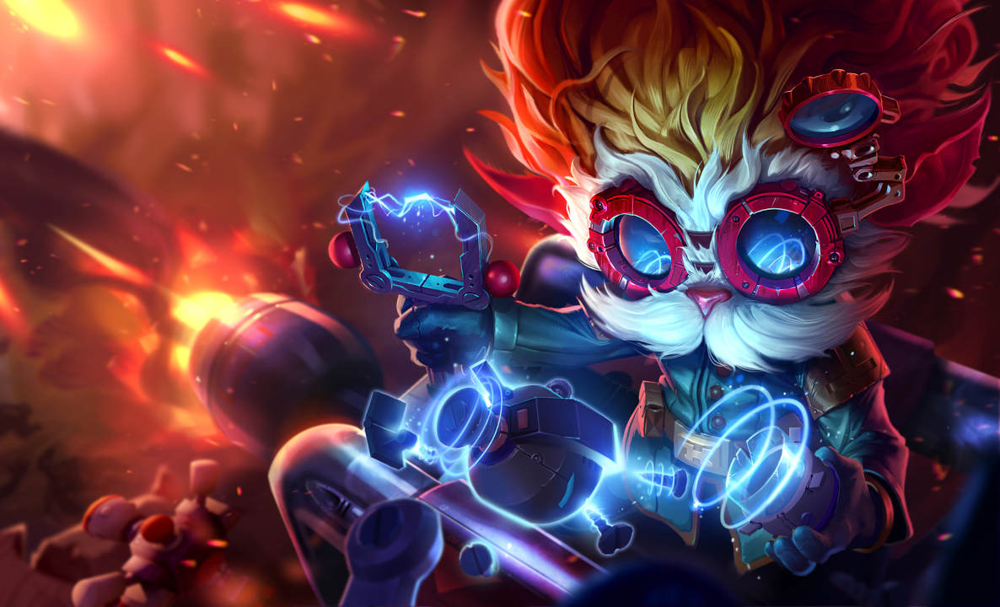

"Dividida entre sua natureza mortal e celestial, Morgana prendeu suas asas para preservar sua humanidade e inflige sua dor e amargura nos desonestos e corruptos. Ela rejeita as leis e tradições que considera injustas e luta pela verdade nas sombras de Demacia com escudos e correntes de fogo sombrio, ainda que alguns tentem reprimi-la. Acima de tudo, Morgana acredita que até os banidos e exilados podem um dia se levantar."
"Só quem você ama pode partir seu coração."
Morgana
Leia a lore resumida da campeã: A Protetora Alada e a Redentora Velada
Função: Mago
Dificuladade: Baixa
Habilidades |
||
|---|---|---|
 |
P - Sifão da Alma | Morgana cura-se beaseado no dano infringido a campeões, mosntros épicos e tropas grandes. |
 |
Q - Ligação das Trevas | Morgana prende um inimigo por alguns segundos, causando dano mágico. |
 |
W - Sombra Atormentada | Morgana amaldiçoa o solo, causando dano mágico por segundo a inimigos dentro da área do efeito, o dano aumenta com base na vida perdida do alvo. |
 |
E - Escudo Negro | Morgana protege um aliado ou a si mesmo, concedendo um escudo que bloqueia dano mágico e desarmes até que se encerre ou seja quebrado. |
 |
R - Grilhões da Alma | Morgana libera suas asas de suas correntes, e as prende em todos os inimigos da área causando dano, pelos próximos segundos, a velocidade de todos é reduzida enquanto ela ganha velocidade de movimento a favor deles, se os inimigos permanecerem muito tempo na área, serão atordoado e sofrerão dano mágico novamente. |
Saiba mais em: Morgana, a Caída
Em manutenção!
